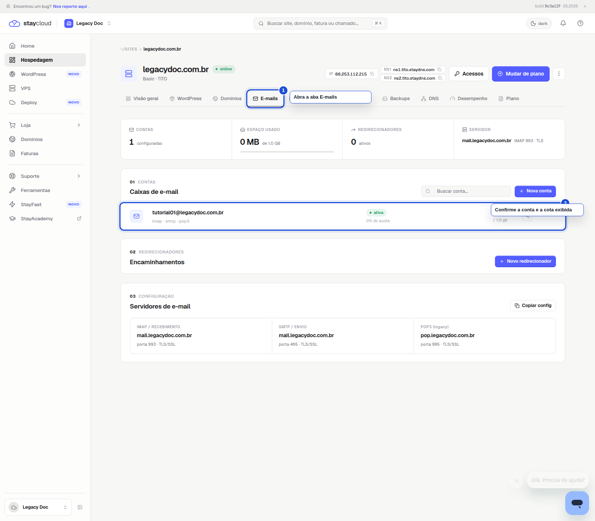
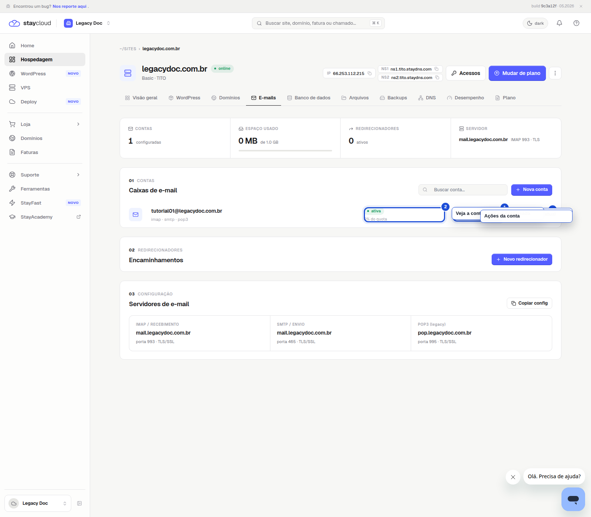

Como alterar o armazenamento dos e-mails no Painel Novo da StayCloud
Abra a hospedagem correta no Painel Novo, entre em E-mails e confira o armazenamento da conta. Se a sua interface mostrar a edição da cota, siga por ela; nesta build, a alteração direta não apareceu.
Quando usar
Use este tutorial quando precisar alterar o limite de armazenamento de uma conta de e-mail vinculada à sua hospedagem.
Antes de começar
- tenha acesso ao Painel Novo da StayCloud
- confirme qual hospedagem contém a conta que você quer ajustar
- use um navegador no desktop
- não altere o valor sem entender o limite do seu plano
- nesta build, a aba E-mails mostra a cota atual, mas não exibiu um botão de editar armazenamento
Passo a passo
Abra a hospedagem correta no Painel Novo
Entre no Painel Novo e selecione a hospedagem que contém a conta de e-mail que você deseja ajustar.

Abra a aba E-mails no Painel Novo
Depois, clique em E-mails para conferir a conta e a cota atual.

Confirme a cota exibida e aponte a limitação da interface
Na linha da conta, veja a cota usada e a capacidade atual. Se o botão de editar armazenamento não aparecer, este é um ponto para abrir ticket.

Erros comuns
- alterar a conta errada
- concluir que existe um botão de edição quando ele não aparece na interface
- deixar de abrir ticket quando a alteração não estiver disponível
- mostrar um campo sensível que não precisa aparecer no tutorial
Quando abrir ticket
- se a conta de e-mail não aparecer na lista
- se o Painel Novo não mostrar a edição direta da quota
- se você precisar de um aumento de espaço e a interface não tiver o controle de edição
- se o limite exibido parecer incompatível com o plano
Alerta de dados sensíveis
- não exponha senhas, tokens, cookies ou sessões
- não mostre dados de outra conta
- mascare informações sensíveis antes de revisar o print
SEO e checklist
Título SEO: Como alterar o armazenamento dos e-mails no Painel Novo da StayCloud
Slug: como-alterar-o-armazenamento-dos-e-mails-no-painel-novo-da-staycloud
Meta description: Veja como conferir o armazenamento dos e-mails no Painel Novo da StayCloud, entender o limite exibido e saber quando abrir ticket para aumentar a cota.
Checklist visual
- o clique principal está marcado
- o print está legível
- a legenda explica a ação
- não há dado sensível visível
Conclusão
Quando você começa pela aba E-mails, confirma a conta certa e entende o limite da interface, fica claro se você consegue ajustar a cota ali ou se precisa abrir ticket.